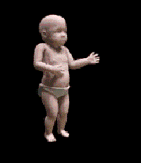

Hola, me llamo Tomás. Trabajo con computadoras, me expreso con canciones y disfruto cruzarme con nuevas ideas.
¿Por qué hacer un blog casero en pleno 2023? No hay por qué. O quizás por simple nostalgia de aquella primera web donde uno se encontraba en el llano y la única invitación era caminar hasta cruzarte algo interesante.
Las páginas eran pequeños rincones personales, experimentos estéticos fallidos o reservorios de virus que fueron enterradas por el discurrir del tiempo y facturas impagas de servidores obsoletos.
Sí, ya fue… esa parece una buena razón. He aquí entonces un pequeño homenaje a esos internautas olvidados.
